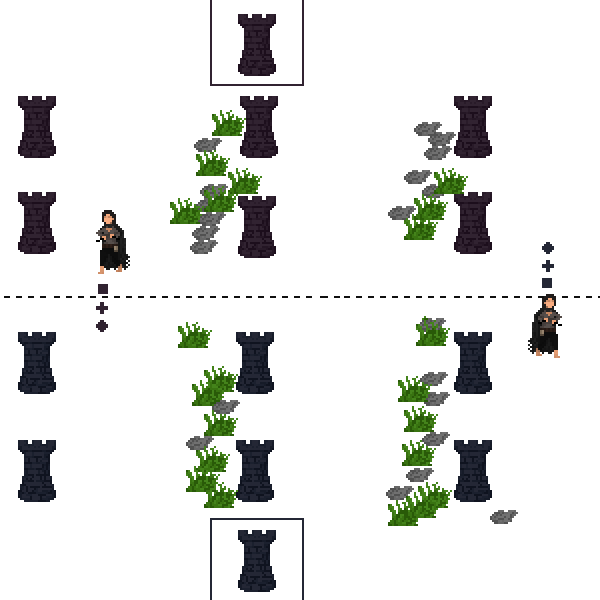

Stormcraft is a multiplayer battle arena strategy game proof of concept for a mobile. You, the player, play as a selected hero with the ability to cast unique spells and spawn minions to target objectives.
We wanted to design the non-human factions first because these faction help enable more unique abilities. Although humans can possess unique abilities using a bit of imagination, we wanted to show a clear distinction of race (via the story) as a central theme of the game and emphasize it more using epic fantasy. Because of the game's story being played out as epic fantasy, we wanted to use this opportunity to design something that was unique to our game.
Initially I had intended to design Ezrae as physically imposing as to change the narrative of female characters as seen as fragile.
However by design of her origins (story), it had made more sense if she had a simple slim fit look. As someone coming from a poor background,
it would have been more likely she'd be somewhat underfed her life and would not have been able to sustain strong muscle mass. As such, her
abilities come from the story's idea of 'Blessings' where in a population only some people are born with these 'Blessings' which enable
them to special powers. For Ezrae specifically, her Blessing, the Blessing of Fortitude, she possesses supernatural strength, endurance, and speed.
As a Fortician, she also possesses the ability to absorb spells and redistritube them to her own weapons. This effect I wanted to look light blue to
represent energy field that is absorbing magic/spells.
As a human hero, Ezrae's design draws inspiration from Brandon Sanderson's Mistborn's Vin.
Conceptually Ezrae is supposed to be seen as fragile so she wears light and vulnerable armor. However, she is
physically strong making her opponents underestimate her. She possesses supernatural abilities (magic) and her lightweight equipment lend to her fighting style which
utilizes agility.
There are 4 factions players can choose from and play (currently 2). Among those factions are a variety (thinking 3 each faction) of heroes the player can select from to choose as their main hero. Each factions' heroes possess unique abilities similarly to the Warcraft III design. Heroes possess 2 types of abilities. Their own unique abilities and abilities shared across each faction's underlings (let's call minions). Unique abilities are specific only to a certain hero. Heroes will possess 2 unique abilities. Abilities shared across faction heroes are what "divides" to help you conquer. You, the hero, summon/spawn 3 different types of minions that help you control and win the game.
There are 3 types of minions the hero can spawn: the infantry unit, range unit, and heavy unit. Model follows similarly to both Warcraft III and Starcraft designs, where a specific
types counter other types. Ideally, our group had wanted 4 different factions, where each faction's minion types are all different and counter types are unique depending on
faction the player is playing against but due to time constraints we went with only 2 factions for now. When a unit is "countered" units that counter another unit deal extra amount of damage
to that specific unit.
the counters can be seen as such. We wanted to have interesting gameplay by using these types of counters such
player would have to intelligently summon their minions in such a way that the counters can be avoided.
Like mentioned above, the combat system follows a unit counter theme; where different unit of different factions counter each other based on who they deal damage to.
For towers, outer towers do less damage than inner towers. This is to encourage that heroes don't just run through the outer towers and ignore them. Inner tower damage is reduced
based on the numbers of outer towers destroyed to encourage more strategical lines of attack as opposed to attacking one location.
To enabled combat, each unit possesses a field of view.
Field of view uses a ray caster that traces over a 3D sphere and determines if there are obstacles and objects within the object's field of view.
Outer towers deal less than inner towers if both are standing/alive. Inner towers' damage are reduced to
the same as outer towers if all outer towers are destroyed. Inner tower damage is reduced based on numbers of outer tower destroyed.
At least one inner tower must be destroy for the Nexus to be attacked. In the case where players try
to circumvent this, Nexus will gain invulnerablility.
The level design we based off of MOBA styled games. We used League of Legends , DOTA 2 , and
Heroes of the Storm as inspirations for map detail and general gameplay. Initial sketches for level designed followed
League of Legends' outer towers and inner nexus tower. Maps are enclosed by towers and main base, called Nexus, is what players are trying to destroy/protect to win.
A brief technical system of the idea of how the game progresses. Different player's heroes move around the map and manuever around towers and against each
other to best optimize attacks. Nexus indicated by the border surrounding the tower. Initial concept for Nexus had Nexus dealing damage but TBD for balance changes. Start: Players spawn are mirrored and players spawn at the Nexus (for sake of showing the hero more clearly the
diagram shows the heroes on the corners) The game was developed as a proof of concept as completing the whole game would require more than two months.
So let's say infantry unit = 1, range = 2, heavy = 3.
In a Faction 1(F1) vs. Faction 2(F2) scenario:
F1-1 counters F2-3
F1-2 counters F2-2
F1-3 counters F2-1
F2-1 counters F1-2
F2-2 counters F1-1
F2-3 counters F1-3
Combat System
Field of View
Towers / Nexus
Level Design

Concluding Notes